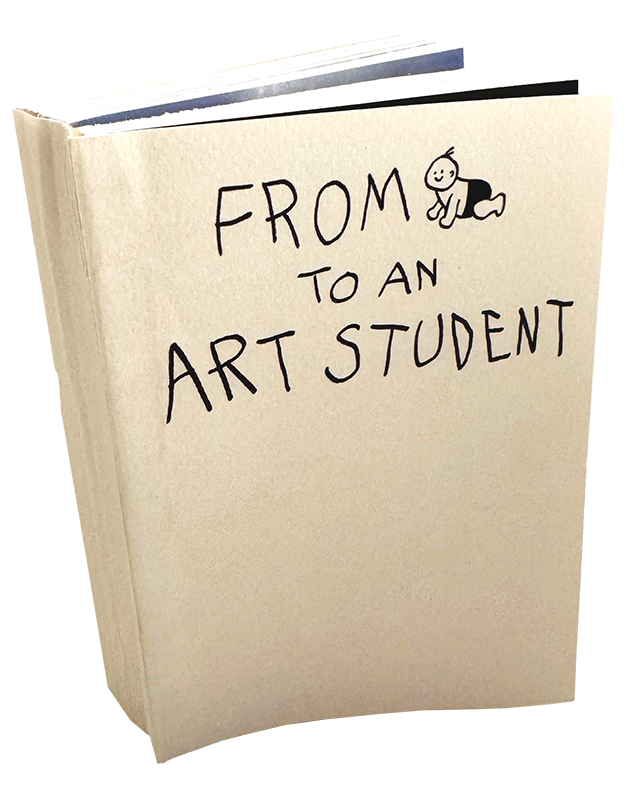

The A to Z Toolkit
As I wrap up my four years studying at art school, I wanted to explore and reflect on the experiences I gained during my undergraduate studies. These experiences felt unique because in art school, there is rarely one defined answer where people can judge whether something is right or wrong.
This idea led to The A to Z Toolkit project, which reframes tools as open-ended materials rather than objects limited to their original functions. Tools are not markers of professionalism but are shaped by creative intention. Once a tool is in the hands of an artist, its meaning and use emerge through personal interpretation and experimentation.

Through a A to Z Toolkit Book that presents a wide range of objects as creative tools and an animation of objects of each letter, I hope to encourage art students and anyone interested in creative practice to feel confident in what they create, knowing that they are the ones who define both the process and the outcome.
From (baby) to Art Student
This book traces my journey from childhood to becoming a senior art student in New York. Through personal narratives, I reflect on how my family, upbringing, and key life events have shaped my creative identity. It serves as a self-portrait of the experiences that continue to influence how I think, work, and grow as an artist.

Helsink-Vantaa Airport
Brand & Identity Redesign
This redesign of Helsinki Airport intends to move away from conventional airport design—with its typical blue tones and modern serif fonts. Exploring a less common palette of greens and browns and developing a modular typographic logo, it creates a system that reflects Finland’s nature-friendly character. The flowing lines draw inspiration from the airport’s organic interior features .
Doors
This project began by collecting images of doors across New York City, exploring the question: what lies behind each door? It grew to feature individuals who collect objects endlessly, reflecting how curiosity drives the act of collecting. The book incorporates a tactile experience: smaller page spreads camouflage within larger spreads, revealing themselves when flipped. Each flip evokes curiosity, inviting the audience to wonder about the people behind the doors.
Journey to Space
The work translates a curated list of space and lunar travelers into a structured typographic system. Key information — including name, nationality, affiliated team, crew size, and year of travel — is organized for clarity while maintaining visual engagement. While the content is data-driven, floating, freeform letterforms evoke the gravity-free environment of space, allowing the visual language to reflect the subject matter.
Happy Meal Toys Archive
Inspired by childhood visits to my aunt’s room, this website archives and showcases her collection of Happy Meal toys. It transforms a personal memory into a playful digital experience, celebrating nostalgia and the joy of discovery.
Launch siteMPAA Rating System Redesign
A reimagined MPAA movie rating system using dinosaurs to represent different audience guidance levels. The design follows a growth and hierarchy metaphor, where each dinosaur reflects the intensity and maturity of the content, creating a fun and intuitive visual system.
The film stills are generated using AI and further animated through AI-based tools.
Risograph Animations
These animations are created by printing each frame using risograph techniques and then digitally sequencing them. This process combines the tactile, textured quality of risograph prints with motion, giving each animation a unique, hand-crafted aesthetic.